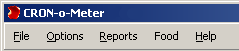
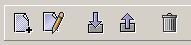
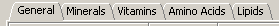
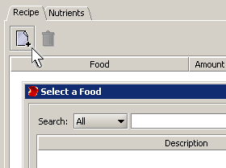
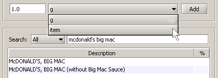
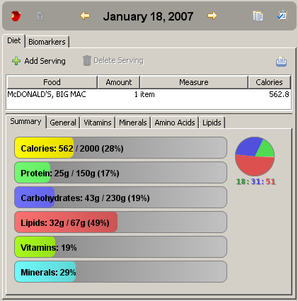
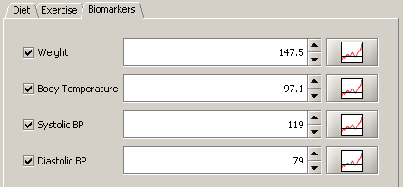

CRON-O-Meter
A free, open-source, cross-platform, diet-tracking application.
Features
- Includes nutritional information on over 7000 foods from the latest USDA datasources.
- Food editor for creating custom foods.
- Recipe editor to create new foods built from sets of other foods.
- Import and export foods and recipes to share with other users.
- Set personal targets for each nutrient, or use the official Dietary Reference Intakes (DRI).
- Track and chart your biometrics (weight, blood pressure, temperature, etc...).
- Generate detailed reports on your nutritional information.
- New: Now supporting multiple users, including common recipes and copy foods between users.
Disclaimer
The data displayed in this software should always be treated as
a rough estimate. The data itself may contain
errors or be incomplete. The USDA food database, for instance,
contains average values for most foods. Local soil and growing
conditions can deviate largely from the average values. Some
nutrients are underrepresented in the database because not every
food item has undergone comprehensive analysis.
Furthermore, this software may contain unknown bugs that affect
the reported values. You should not use this
program to make life-critical decisions.
The developers of this software accept no liability in the use of this
software.
Use at your own risk.
Installation
Download and execute the CRONOMETER setup program. You can use the default installation directories, or
choose your own. If the program does not start after installation, the most likely cause
is that a Java environment needs to be enabled.
The Java software can be downloaded free at:
http://www.java.com/en/.
You can also manually select Java for various versions of Linux and Solaris at:
http://www.java.com/en/download/manual.jsp.
Java for Apple computers can be downloaded by searching for "download Java"
at http://www.apple.com/.
Updating Versions.
When a new version of CRON-o-meter is available, just run the new setup program.
Any data that you previously entered will be retained.
Program Controls
Menu Bar

The menu bar has the following functions:
- File
Manage Users - Add or remove users from Cronometer.
Edit User Targets - Information to define a profile and calculate nutritional targets.
Quit - Save data and terminate program.
- Edit
Copy and Paste food accross days or users.
- Reports
Nutrition Report - Produces a one-day report that can be saved as an HTML or text file.
- Food
Import Food - Reads a file of nutritional information prepared by another CRON-o-meter session.
Create New Food - Allows entering nutritional information for a food that is not in the database.
Create New Recipe - Allows using combinations of foods in the database to create a new food.
- Help
Help - This help file
About - Programming credits
Tool Bar

The tool bar under the menu bar has icons for the following functions:
- Create New Food
- Edit Food
- Import Food
- Export Food
- Delete Food - This icon is only activated for foods in My Foods category.
Program Functions
Creating a Food
Because of the large number of food products available to consumers, it is very likely that
you use a food that is not listed in the database. In this case, you will need to create a
new food. You can use the "Create New Food" function, or if there is something similar in the
database, you can export it and then import it, rename it, and edit it. Basically, you need
to specify the name of the food, the quantity for which you have nutritional data, and then
enter the detailed quantity of nutrients under each of the tabs below.

Exporting a Food
This function provides a way of sharing your recipes by creating
a file with an .xml extension that can be sent to another CRON-o-meter user.
Click on the food to select it, and then click the Export Food icon, or
right click on the food that you want to export, and click the "Export Food" icon
from the pull-down menu that appears by the cursor.
Importing a Food
Click on the Import Food function to display a file dialog panel. Select the .xml file
and click on the Open button. The imported food will be placed in My Foods category.
Creating a Recipe
On the Menu Bar, click on "Food→Create New Recipe". Under the "Recipe" tab click the
Add icon 

This causes the "Select a Food" panel to display. You can now type the name of
the first food ingredient
for your recipe. Select the ingredient by clicking on it, enter a weight, and click the "ADD"
button. Repeat the procedure for each ingredient. In the recipe, you can adjust the amount of
each ingredient by double clicking the amount field and typing a new value.
Similarly, by double clicking the calories, you can type a new number
and the weight will be adjusted accordingly.
Foods may be removed from the recipe by clicking on them and then clicking on the trash can icon.
Setting Nutritional Targets
The default nutritional values provided by CRON-o-meter are based on the official
Dietary Reference Intakes (DRI) set by the USDA. You can change these values
to implement any diet. Using the tabs, navigate to any
particular entry and double-click to display a customization panel
corresponding to the entry. The illustration below shows the cursor on
the "Energy" entry and its control panel.
Entering Daily Consumption
Select the date for which you want to enter your consumption.
Search the data base for the foods that you consume, select by clicking the appropriate entry,
and then click the "Add" button. For example, suppose that you ate a McDonald's Big Mac for lunch.
When you search for "mcdonald's", there will be a list of McDonald's products. Click once on
"McDONALD'S, BIG MAC" (Don't double click because that will bring the food editing panel).
Click on the portion size pull-down menu which will display "g" (gram) or "item". Select "item",
and then click the "Add" button. The food will be added to the right side of the screen
for the corresponding day.

The distribution of macronutrients relative to the targets is immediately displayed in the
colorful bars and the pie-chart of the summary. The numbers in parentheses give you the
percentages of your daily targets. You can then say: "Wow! 53% of the calories of a Big Mac
come from fat!!!" (the red part of the circle).
Hopefully, you can make better choices for the
rest of the day. CRON-o-meter will help to keep you on track.

Entering Biomarkers
Click on the "Biomarkers" tab for a specific date. Click on the check box of the specific
biomarker that you want to track (Weight, Body Temperature, Systolic, or Diastolic Blood Pressure).
Enter a numeric value. Note that there are no units associated with any of these biomarkers.
Therefore, you can enter your weight in pounds or kilograms, and your temperature in either Celsius or
Fahrenheit degrees. Clicking on the corresponding graph icons for each biomarker will display
a chart of the variations over time.

Feedback
This software is made by an all-volunteer effort. If you want to chip in and
lend a hand there are lots of things you can do to improve the program. Besides
programmers, we could use:
- Technical writing skills to make a user-friendly help manual
- Custom art work for icons and aesthetics
- Scientific accuracy -- help find errors, bugs, or improve the nutritional analysis
- A library of food entries that could be shared on the Internet by CRON-o-meter users
If you wish to contribute, contact aaron@spaz.ca
Apr 27, 2006 11:47:51 PM